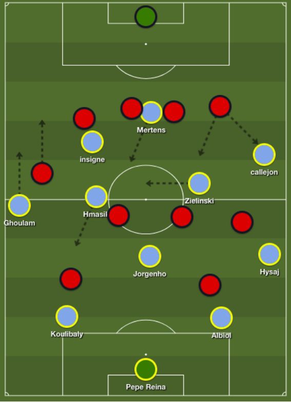

| Napoliが魅せたサッカーの未来 フットボールパラダイム | |
| フットボールパラダイム | |
| Football Paradigm (2018) | |
Napol i が魅せたサッカーの未来
マウリツィオ・サッリ
サッリの指導者キャリア
ナポリ・サッリ
高い位置からのプレッシング
ゾーン２
プレー原則
パターン化
ゾーン３（相手のゴール前）
サッリのサッカーは実現可能か
お礼
２０１７---２０１８シーズン に S C ナポリが世界に見せたサッカーはある種の革命であったような気がする。マンチェスター・シティのペップ・グアルディオライ以外にもゲームメイクという戦略を取り、ダイレクトプレーではなく、ボジショナルプレーを志向しながら勝利を目指していたのだ。こ の S C ナポリを率いたのは紛れもなくイタリア人のマウリツィオ・サッリ （ Maurizio Sarri １９５９年１月１０日）である。サッカーは選手のクオリティはもちろん大事だが、最も大事なのは監督である。今のナポリのサッカー語る前に彼の経歴を少し見てみたいと思う。
サッリは、ナポリにて生まれる が3 歳からはトスカーナ州で育った。サッリは自分のことをトスカーナ人であると公言している。サッリは、アマチュアリーグ の D F としてプレーしていたがすぐに引退し、モンテ・デイ・パスキ・ディ・シエナという銀行に就職をした。彼はプロサッカー選手ではなかったのだ。
銀行員として働きながらイタリアの下部リーグで指導者としてキャリアをスタートさせたのである。ついに彼は一つの決心をする。２０００シーズンにイタリ ア6 部リーグに所属す る A C サンソヴィーノを率いた際に、働いていた銀行に辞表を出したのである。さらにリーグ制覇できなければ監督業から身を引くともクラブに宣言していたのであった。そして、サッリ見事にリーグ制覇を達成。この頃、サッリはセットプレー を 3 3 通りも練習をしていたと言われている。
そして、付いたあだ名がミステル３３（ミステルとはイタリア語のミスターという意味）であった。
その後、２０１２年にセリ エB に所属していたエンポ リ F C の監督に就任。２０１２---２０１３シーズンは昇格プレーオフに敗れ、昇格は叶わなかったが２０１３−２０１４年シーズンはセリ エB で２位となり、セリ エA 昇格を達成したのであった。２０１４---２０１５シーズンをセリ エA １５位で終えた後、辞任した。２０１５年、セリ エAの S C ナポリの監督に就任し、現在も監督を続けている。
|
1990--1991
|
Stia
|
サッリがナポリに就任する際、彼はナポリにとって適任者ではないという見方がされていた。今シーズンこそ、話題になったものの就任した２０１５---２０１６シーズンはボジティブな話題に包まれることはそう多くなかったはずだ。サッリのナポリ１年目は非常に難しい状態であったのだ。ナポリの英雄であるマラドーナからも懐疑的な見方をされ、見えないプレッシャーとも戦わなければならなかったのである。マラドーナはサッリのナポリについてこんな言葉も残している。
「サッリが監督では勝てるナポリを見ることはできない。個人的には、ラファエル・ベニテェスが良いであろう。サッリはナポリの適任者ではない。」
サポーターたちも期待しておらず、２０１５−２０１６シーズンのシーズンカードの売り上げは例年と比べて少なかったようである。
この悲観的なサポートを引きずってか、最初の３試合で１つも勝つことができなかったのだ。サッリはエンポリで１−４−３−１---２というフォーメーションを使って成功を収めていたが、ナポリではこのフォーメーションで成功を収めることができなかったのである。そこでフォーメーションを１−４−３---３（中盤の形は逆三角形）に変更し、立て直しを図ったのである。その後、ラッツィオに５−０、ユベントスには２−１ 、 A C ミランとのアウェー戦でも４−０で勝利を収めたのである。サッリはこの立て直しに対して、フォーメーションの変更が理由とは考えていなかったようで、こんな言葉を残している。
「コーチの１人は常に私に対してフォーメーションの話をしてきた。これはフットボールを理解しているとは言えない」
サッリは紙の上での１−４−３−３と実際の試合においての１−４−３−３とは全く異なったものであると述べたいのであろう。それもそのはずである。ナポリの攻撃 的 M F は度々、守備 的 M F の横に並び、センターフォワードは中盤の位置まで下がり、左サイドバックはウイングの位置まで駆け上がるナポリのサッカーをフォーメーションから語ることはもはや無意味なのである。また、状況に合わせてそれぞれが下の図のような動きを見せることがある。
（２０１ ６- ２０１７シーズンのある試合のスターティングメンバー）
ナポリ の G K がボールを持った時、彼は可能な限り２人 の C B か守備 的 M F にパスを出そうする。しかし、相手が高い位置からプレッシャーをかけてきた場合、これを実行することは間違いなく難しくなる。そこ で G K は攻撃 的 M F である２人を探そうとするはずである。それを見越してか、このナポリの攻撃 的 M F はボールを受けるためにパスコースを作り、高い位置から少し低い位置に下がってくるのである。ペナルティエリアの前の真ん中のゾーンで５対３の状況を作り出そうとするのである。このナポリの５人（２人 の C B と３人 の M F ）に対して相手の選手がマークをしてきたら、ナポリ の F W に対して相 手 D F は１対１の状況となり、ナポリ の F W はこ の D F の前後に生まれた大きなスペースを得て、プレーすることができるようになるのである。こうすることによってビルドアップを成功させるのである。
さらに図のような配置（両ウイングが内側に絞り、両サイドバックが高い位置を取る）をそれぞれが取ることで相手の左サイドバックを迷わせることができる。この左サイドバックがナポリの攻撃 的 M F につられずそのまま右ウイングの選手をマークし続ければこの攻撃 的 M F はフリーとなり、ボールを受けることができる可能性が一気に高くなるのである。
今度はゾーン２におけるビルドアップについて。ここで言うゾーン２とは、フィールドを横に三等分した場合の真ん中のゾーンを表すとする。ここでナポリの真骨頂が発揮される。そう、ゲームメイク戦略におけるポジショナルプレーである。なぜポジショナルプレーが彼らの真骨頂と言えるのであろうか。
まず第１に明らかなのは、ナポリの選手が考えていることは皆、同じということである。お互いのコミュニケーション（ここではただ声を出すことではなく、調和という言葉が相応しいかもしれない。）が高いレベルで保たれ、実行されている。選手たちはお互いに何をしたいのかを理解し、それを実行するために汗を流しているのだ。サッリは高い位置でプレーできるように考えている。
第２に選手たちは意図的で意味があるプレーを実行するためのテクニックを持っているということである。別の言葉で言い換えれば、ナポリの選手たちには機動力があり、継続性があり、ボールを上手くトラップし、正確なパスをすることができるのである。
第３は試合で表現されるナポリのプレーモデルにはいくつかの特徴的なプレー原則と繰り返されるパターンが見られることである。
サッリ自身が実際に述べているように、彼はフォーメーションというものに固執しない。彼の選手たちは状況に合わせてポジションを移動させていくのである。そこで重要となるのはプレー原則というものだ。このプレー原則はどの状況においても選手の助け（判断の基準）となる。しかし、このプレー原則は選手にある一定の自由を与え、クリエイティブなプレーをする有余を与える。
この状況においては何をしなければならないのか、どのようなプレーをしなければならないのかという基準となるものだ。
それではナポリのプレー原則について細かく見ていきたい。
紙の上ではナポリは１−４−３−３（中盤は逆三角形とする）のフォーメションを採用しているとする。
１、 フィールドの軸（第３レーン）でプレーする
５レーン理論をご存知だろうか。サッカーのフィールドを縦 に5 つのレーンに区切ってサッカーを考えること が5 レーン理論の基本となる。特に左から見 て2 番目 と4 番目のレーンは新たな戦術用語「ハーフスペース」と名付けられ、欧州の戦術アナリストの間で現在、注目されている。
M F の３人 と F W の３人がこの真ん中のゾーン（フィールドの軸・第３レーン）で主にプレーしようとする。特にこの状況が生まれるのがゾーン２にボールが入った場合だ。では、サイド（第１レーンと第５レーン）はどうなのかというと、そこにはサイドバックの選手が高い位置を取って幅を作り出しているのである。
２、相手の背後からパスラインへ動くフリーランニング
ナポリ の M F のポジションの位置取りは、非常に興味深い。こ の M F たちは意図的に相手の背後に入り、相手の視界から消えた瞬間にパスラインに入り直すのだ。この動きは １m から ３m のちょっとした動きかもしれないが、特にゾーンで守る相手には非常に効果的と言える。
（守備 的 M F がボールも持っている場合）
３、 リアクションではなく予測
ナポリの選手は一歩先を予測し、前に進むことを常に考えている。仲間の選手がプレーできる状態であれば、他の選手たちは次々にボールを受ける場所を探し出し、そこに動き続ける。これもまた相手にとって、ボールを奪い取ることは非常に困難である。
４、お互いを見て、動き続ける（適切な距離感と三角形）
サッリは選手たちにお互いを見て、動き続けることを要求する。ここでは決して自分勝手に動き出すことは許されない。お互いに距離を保ち、三角形を作り続けるのだ。
５、１人を飛ばし、そして３人目の選手を使う
サッリにおけるポジショナルプレーにおいては、１人を飛ばし、飛ばされた選手は３人目となってボールを受けることがよしとされる。自分に一番使い選手にパスをすること悪いことではないが、相手に読まれやすくなってしまうのである。このパスを習慣化させることで、ボールを奪われる可能性を少なくするのである。
６、ボールスピード（プレースピード、パススピード）をあげる
ナポリはできる限り速いボールを使ってパス交換を行う。そのボールは足から足へと繋がれるのだ。そうすることで相手には多くの状況（簡単な状況や難しい状況が）が生まれ、ここで生まれる問題を対処することに追いつけず、チーウが前に進まなくなり、ナポリが度々前に進むことができるようになるのである。
７、数的優位を作り続ける
相手の状況を見ながら、自分たちのポジション取りを最適化することで数的有利な状況を作り続けるのである。攻撃におけるポジショナルプレーの成立である。
８、相手を誘い出す
相手が後ろに引いて、ブロックを作っている時、ナポリにとって得点をすることは難しくなる。こういった状況の場合、ナポリはボールを後ろ （ G K、 C B ）に下げ、相手の押しあげを誘いだすのである。この相手の押し上げによって生まれたスペース（特に相手 の D F の背後のスペース）を使おうとするのだ。
先ほど述べたプレー原則と共にナポリにあるのが、固定されたパターンだ。
相手が図のようなプレッシャーをかけてきた場合、このような形を常に作り出そうとするのだ。

（守備 的 M F がボールも持っている場合）
さらに左ウイングの選手とセンターフォワードの選手、左サイドバックの選手は以下のような動きをする。
（左の攻撃 的 M F がボールを持っている場合）
ナポリにはこの他にも様々なパターンが見られるのである。
得点するチャンスを作り出すことができなければポゼッションは無意味であることは言うまでもない。そこを理解した上でナポリはゾーン３ で2 つの明確なプランがあった。この２つのプランは相手がナポリに対して実行する戦術に対応するためのものである。プレー原則とパターンを駆使して実行されるナポリのポジショナルなるプレー（ピッチ上のどこにボールがあるかを踏まえて、選手たちが正しいポジショニングをしていこうとするプレーの方法）は、ゾーン２で圧巻の力を発揮する。それが故に相手の多くは、できる限り選手間の縦と横の距離を短くし、ブロックをゴール前に作ろうとするのである。そうすることでナポリに与える時間少なくし、スペースを小さくするのである。それではこういった場合のナポリの２つのプランを見てみたい。
１ 、 F W ３人の裏への動き
1 つ目はフィールドの軸（第３レーン）で行われる３人 の F W による裏を狙うフリーランニングである。彼らのこのフリーランニングによって、相手 の D F は吊られて 、 D F のラインをさらに下げることになってしまうのだ。そうすることで相手 の D F ライン と M F のラインの間にスペースがわずかに生まれることになるのだ。そこで卓越した能力をもつ３人 の M F が時間とスペースを得たことでより簡単にプレーできるようになるわけだ。上手くいけば彼らがそのまま相手 の D F の裏に走 る F W にボールを供給し、チャンス、そして、ゴールを演出することができるのだ。
２ 、 D Fと G K の間へのセンタリング
こ の2 つ目の方法でナポリは多くのチャンスを作り、ゴールを生み出した。その方法とは相 手 G Kと D F の間に低くて速いセンタリングをあげるというものである。実はこの攻撃によってナポリは一つの利益を得ていたのである。このセンタリングを処理することは相手 の D Fと G K にとっては難しいことである。
このセンタリングを送り続けることで、相手 の D F はこのセンタリングを防ぐため に D Fと G K の間のスペースを限りなく、小さくしようとするのだ。その結果、ラインを押し上げることができなくなり、特にゾーン２でナポリの選手たちに時間とスペースを与えることになってしまうのだ。もし相 手 D F がラインを押しあげれば、相 手 D Fと G K の間にスペースが生まれ、このセンタリングがより効果的になるというわけだ。
最後にサッリのサッカーは実現可能かについて考えてみたい。
答え は YE S と も N O とも言える 。 YE S と答えたのはただ限りなく近いサッカーを展開することは可能であるはずだからだ 。 N O とも答えたのは同じ選手を集め、同じ監督が実行しなければ同じサッカーは生まれないものである。サッカーとはそういうスポーツだ。ナポリのサッカーを紐解きながらある点に着目していたのがお分かりになったであろうか。そう、プレー原則とパターンである。サッカーの局面は４つに分けられる。攻撃、守備、攻守の切り替え（攻撃から守備）、攻守の切り替えの４つである。この４つの局面とゾーン１、ゾーン２、ゾーン３、５レーンで実行するプレーの原則とパターンを紐解いて（分析）いけばナポリのサッカーに限りなく近づけることが理論上、可能なのだ。（ナポリのプレー原則とパターンは今回紹介したものだけではない。）このプレー原則とパターンを選手にトレーニングして、プレーモデルとして実行させることはまた別問題であるが、このプレー原則とパターンの重要を理解することこそが第１のステップであると言えよう。さらに言えばこのプレー原則とパターンを理解し、トレーニングに落とし込むことができれば新たなるサッカーを創造することも可能なのである。
この度は本書のお買い上げありがとうございます。
本書のお買い上げ特典として 、 Faceboo k グループ（フットボールパラダイム）へ招待させて頂きます。このグループでは、本書の内容に関して質問を受け付けると同時に、サッカーに関しまして議論させて頂き、お互いにサッカーとは何かについて学んでいければと思います。基本的 に Faceboo k グループへの参加者は本書のご購入様だけとなっております。このグループへの参加希望の方は、ご質問に答えて頂くという形でグループへ承認させて頂きます。
質問：キーワードは何ですか？
答え ： 1-4-3-3
Faceboo k ページ：フットボールパラダイム
fb.me/footballparadigm
Facebook グループ：チーム：フットボールパラダイ ム https://www.facebook.com/groups/204298106820584/
議論の輪を広げるために本書のシュアもしく は Amazo n へのレビューを書いて頂ければ幸いです。ご協力の程、よろしくお願い致します。この度は、本当にご購入ありがとうございました。引き続き、よろしくお願い致します。
{kind=link}